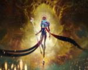
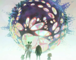

-
Episode 4 - "Happy Progress Day!"
Years later, Piltover thrives due to Jayce and Viktor's Hextech advancements, celebrated during Progress Day. However, Silco's growing criminal empire threatens peace as he deploys Jinx, now a dangerous and unstable enforcer. Caitlyn, an ambitious enforcer, begins investigating the undercity, unaware of the dark secrets she'll uncover.
-
Episode 5 - "Everybody Wants to Be My Enemy"
Vi escapes prison with Caitlyn’s help, setting off on a quest for justice and revenge. Meanwhile, Jinx spirals deeper into madness, craving approval from Silco while obsessing over her past. Tensions escalate between Piltover and Zaun, threatening to spark an all-out conflict fueled by betrayal and mistrust.
-
Episode 6 - "When These Walls Come Tumbling Down"
Vi and Caitlyn venture deeper into Zaun, searching for Silco's base. Viktor becomes desperate to save himself through dangerous arcane enhancements. Meanwhile, Jinx’s mental state worsens as she faces memories of her past and Silco’s growing demands for loyalty amid rising rebellion.
-
Episode 7 - "The Boy Savior"
Vi and Caitlyn are rescued by Ekko and the Firelights, who resist Silco’s control. Jayce grapples with political betrayal while Viktor's obsession with arcane magic leads him down a perilous path. Jinx, trapped by memories and manipulation, makes a fateful decision that sets the stage for devastation.